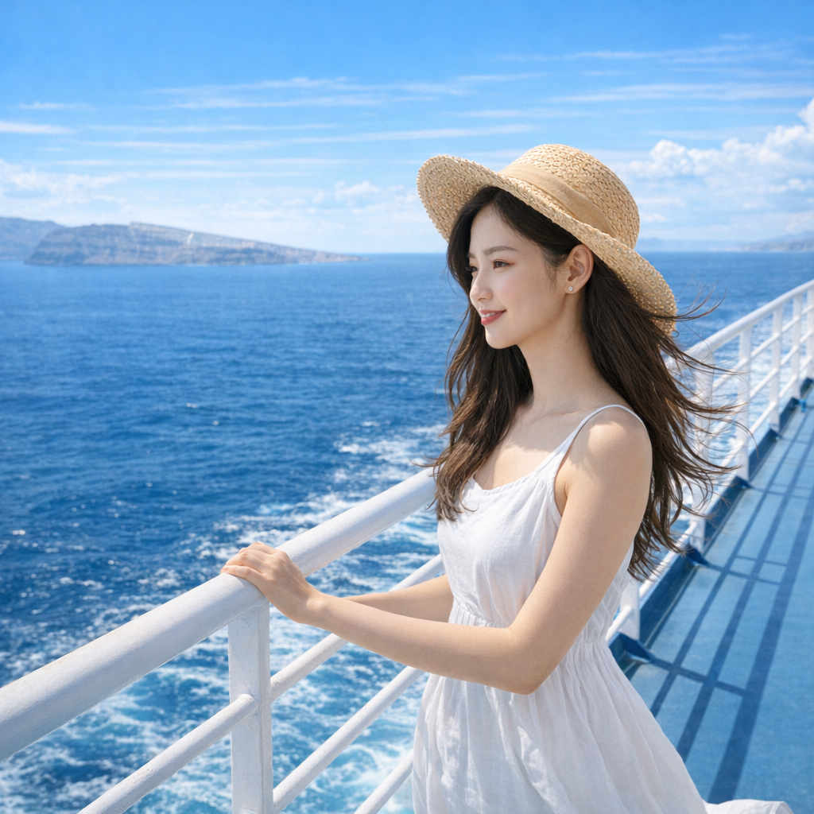

Ferry to Athens
The ferry carves a bright line across the Aegean. Dorami leans into the wind—white dress fluttering, straw hat tilted, eyes on the horizon that keeps changing but never rushes. Between islands and a new city, she keeps the moment simple: salt air, sunlight, and the soft hum of the engine beneath the deck.